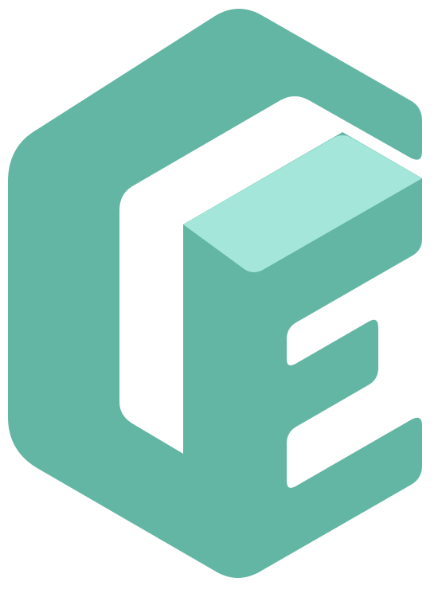
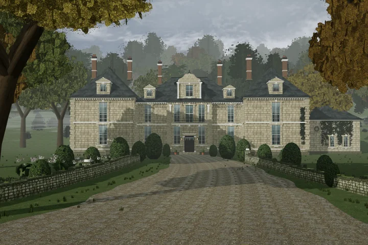
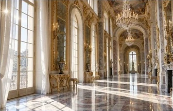
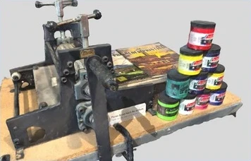
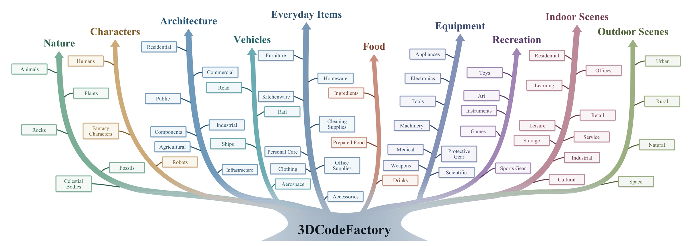
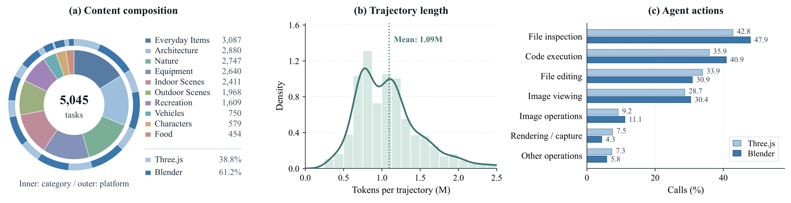
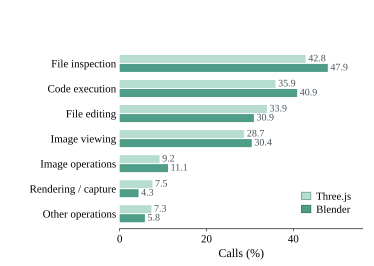
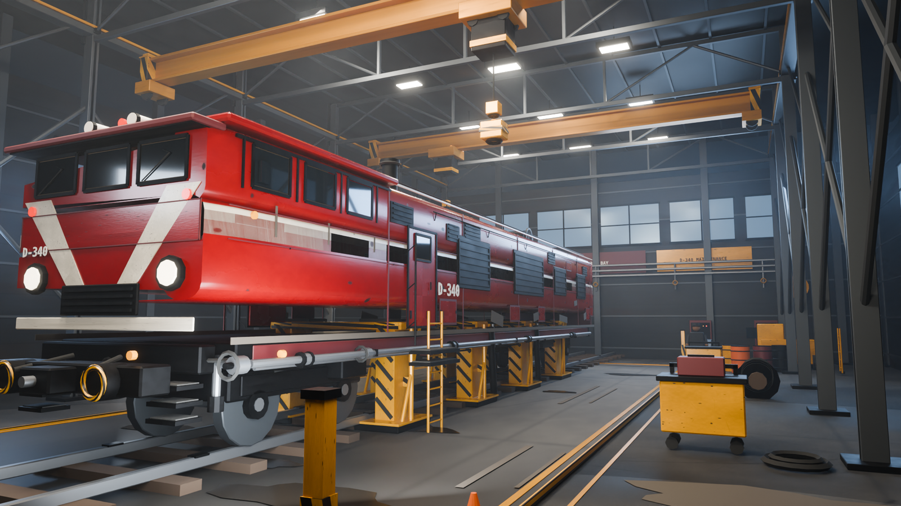

语料清洗与锚点合成
对大规模文本语料去重与分类对齐，生成候选图像并滤除透视畸变样本，确立无歧义的空间布局参照。

3DCodeFactory2,920 Blender · 2,125 Three.js
单条轨迹平均包含 109 万词元
87.7% 为跨领域多对象复合场景
Qwen3.5-9B 监督微调性能增益
SHOWCASE
从精密机械装配、自然生态群落到可交互空间，所有几何网格、程序化材质与光影均由代码直接生成。点击任意卡片可检视输入参考、三维模型与实时场景。
CODE TO 3D
建筑开间、屋顶坡度、程序化纹理与环境光影全部在代码中显式定义。左侧可直接浏览完整源码，右侧拖动分界线即可对比无材质几何白模与最终渲染画面。

200-TURN SCENE CONSTRUCTION
在现代岛台厨房重建任务中，原始基座仅执行 14 次视觉检查便在第 101 轮过早停止；微调后模型持续演进 200 轮（累计 84 次视觉自检），依次完成透视校准、柜体装配与光影精修。
FINE-TUNED SCENE GENERATION
经 3DCodeFactory 微调后，模型在多物体空间布局、部件级交互控制、微观几何纹理与全局光影上表现出色。
DATA ENGINE
从自然语言出发合成视觉参考图与结构化任务，驱动智能体在渲染沙箱中多轮演进，并通过从视觉到功能的多项验收保障数据质量。
对大规模文本语料去重与分类对齐，生成候选图像并滤除透视畸变样本，确立无歧义的空间布局参照。
协同多智能体将视觉锚点解析为场景设定、几何规格与交互需求，同步生成任务专属的三档评分细则。
智能体在 Blender 或无头浏览器沙箱中交替执行编码、渲染采样与视觉自检，针对穿模与比例偏差迭代修正。
结合多视角视觉评审、脚本化网格拓扑检查与自动化交互测试，执行多维合取门控，筛选高分轨迹入库。
TASK SYNTHESIS
通过需求、准则与审计智能体协同，将参考图解耦为上下文、几何规格与交互功能；同步构建严格对齐的视觉、规格与功能三档判据，确保每项要求均可客观核验。
ROLLOUT AND VERIFICATION
采集阶段完整记录智能体的代码编写、报错恢复与多视角视觉自检轨迹；验证阶段联合多视角 VLM 评审、场景图几何校验与自动化交互测试，执行严格门控筛选。
VERIFICATION RUBRICS
通用美学打分容易放过构件缺失或二维贴图伪装。我们针对每个任务的核心构件定制覆盖视觉、规格与功能的 0 / 0.5 / 1.0 三档判据。以下为两组代表性任务包的完整输入与验收细则。
五开间筒形拱顶长廊、6 盏多层水晶吊灯与 12 根科林斯壁柱，支持日光星芒调节、多机位巡检与拱形镜门开合交互，共设 12 项（视觉 / 规格 / 功能）三档评分判据。

双拱形镂空铸铁机架、外露啮合齿轮组、双 T 型螺纹调压丝杆与 4 层阶梯油墨罐，包含 367 个独立三维网格构件，共设 10 项（视觉 / 规格）三档评分判据。

静态建模任务，功能要求 F = ∅，无独立功能准则。
OPEN DATASET
不同于仅保留最终脚本的静态代码库，3DCodeFactory 完整记录了智能体从初版建模、沙箱报错恢复、多视角渲染自检到精修交付的多轮演进过程。




DOWNSTREAM BENCHMARKS
涵盖复杂场景构建、局部几何编辑、网页三维交互与单物体建模四类下游基准。微调后 Qwen3.5-9B 综合得分跃升 +27.81 分，Qwen3.8-27B 全面超越同系旗舰 Qwen3.8-Max。

前沿模型与 Qwen3.5-9B / Qwen3.8-27B 监督微调及消融对比 · 3 项基准
| 模型与训练设置 | BlenderWorld | P3D-Bench | 3DCodeBench | 三项平均 | ||||||
|---|---|---|---|---|---|---|---|---|---|---|
| 模型与训练设置 | BlenderWorld | P3D-Bench · Three.js | 3DCodeBench | 三项平均 | ||||||
| Text | MM | Score | Geo | Judge | Score | CD ↓ | Uni3D | Score | ||
| GPT-6 Astra | 78.60 | 80.70 | 79.97 | 63.43 | 62.10 | 62.77 | 6.79 | 59.76 | 76.49 | 73.08 |
| Claude Opus 5 | 74.80 | 72.10 | 73.04 | 69.09 | 57.52 | 63.31 | 6.37 | 54.60 | 74.12 | 70.16 |
| DeepSeek-V4.1 Flash | 79.10 | 74.46 | 76.08 | 64.10 | 56.86 | 60.48 | 6.08 | 53.68 | 73.80 | 70.12 |
| Qwen3.8-Max | 59.60 | 61.10 | 60.58 | 61.06 | 50.51 | 55.79 | 6.71 | 50.49 | 71.89 | 62.75 |
| Qwen3.5-9B原始基座 | 6.94 | 7.28 | 7.16 | 38.88 | 24.97 | 31.93 | 25.95 | 18.74 | 46.40 | 28.50 |
| + 3DCodeFactory未筛选轨迹 | 55.40 | 43.78 | 47.84 | 43.35 | 31.49 | 37.42 | 11.45 | 36.15 | 62.35 | 49.20 |
| + 3DCodeFactory完整筛选 | 66.04 | 53.54 | 57.91+50.75 | 48.00 | 38.44 | 43.22+11.29 | 6.91 | 42.50 | 67.80+21.40 | 56.31+27.81 |
| Qwen3.8-27B原始基座 | 53.78 | 52.61 | 53.02 | 53.77 | 49.49 | 51.63 | 7.31 | 49.95 | 71.32 | 58.66 |
| + 3DCodeFactory未筛选轨迹 | 64.70 | 63.41 | 63.86 | 57.68 | 52.94 | 55.31 | 6.83 | 50.44 | 71.81 | 63.66 |
| + 3DCodeFactory完整筛选 | 71.91 | 69.18 | 70.13+17.11 | 59.79 | 55.33 | 57.56+5.93 | 6.66 | 51.96 | 72.65+1.33 | 66.78+8.12 |
注：三项平均为各基准综合得分（Score）的算术均值；P3D-Bench 评测 Three.js 子集；3DCodeBench 中 CD 与 Uni3D 均按百分制缩放（×100），综合得分定义为 Score = ((100 − CD) + Uni3D) / 2。绿色数值为相对各自原始基座的提升幅度；“未筛选轨迹”使用同等规模未经过滤的轨迹训练。
CITATION
@article{wang20263dcodefactory,
title = {3DCodeFactory: Scaling Training Data for 3D Code Agents},
author = {Wang, Zhaoyu and Wen, Xueru and Li, Xingyu and Lou, Jie},
year = {2026}
}